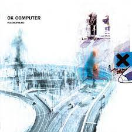

OK Computer
OK Computer

- OK Computer is the third studio album by Radiohead.
- Released in the UK on 16 June 1997 by EMI.
- The album's lyrics depict a world fraught with rampant consumerism, social alienation, emotional isolation and political malaise; in this capacity, OK Computer is said to have prescient insight into the mood of 21st-century life.
- The band used unconventional production techniques, including natural reverberation, and no audio separation. Strings were recorded at Abbey Road Studios in London.